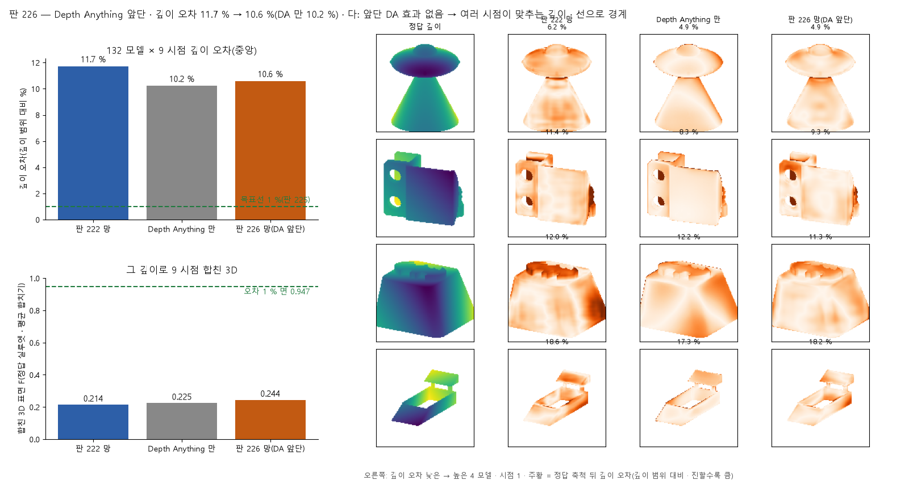

m1_tr0226_h000_앞단DA
Depth Anything 깊이를 망 입력 앞단에 넣으면 예측 깊이 오차가 1 % 목표선 쪽으로 줄어드나?
판정 · 다 — 132 모델 × 9 시점 깊이 오차 222 11.7 % → 226 10.6 %(0.904 배 · 10 % 줄음) · DA 만 10.2 % · 합친 표면 F 0.214 · 0.225 · 0.244 · 렌더 윤곽 그대로(0.947) · 실물 윤곽 0.811 → 0.798 · 실물 깊이 0.114 → 0.104(DA 0.099) → 한 장 깊이는 10 % 안팎에서 멈춤 · 다음: 3 면도 → tr182 까지 이어 쓰임새로 목표선 다시 · 그다음 여러 시점 맞춤 깊이 · 선으로 경계
결정 표(돌리기 전에 정함)
- 만약 226 망 깊이 오차 중앙 ≤ 2 %
다음 목표선 근처 → 축척 찾기(상대 → 절대 · 정답 없이) · 실물 합치기 판 - 만약 226 망 깊이 오차 ≤ 0.7 × tr222(30 % 넘게 줄음) 이지만 2 % 넘음
다음 앞단 DA 는 도움 · 아직 멂 → DA 앞단을 둔 채 여러 시점이 서로 맞추는 깊이 판 - 만약 226 망 깊이 오차 > 0.7 × tr222
다음 앞단 DA 효과 없음 → 여러 시점이 맞추는 깊이 · 선으로 경계 세우기 쪽
분석
한 줄로
물음: Depth Anything 깊이를 망 입력 앞단에 넣으면 예측 깊이 오차가 1 % 목표선 쪽으로 줄어드나?
답: 거의 안 줄어든다(결정 표 「다」). 132 모델 × 9 시점에서 깊이 오차가 11.7 % → 10.6 % 로 10 % 줄었을 뿐이다. Depth Anything 만 써도 10.2 % 다. 목표선 1 % 와는 여전히 열 배 차이다. 한 장에서 깊이를 추정하는 방법으로는, 그 앞에 무엇을 넣든 1 % 에 닿지 않는다.
왜 이 판을 했나
tr225 에서 9 시점을 합친 3D 가 버티려면 깊이 오차가 깊이 범위의 1 % 안이어야 했다. tr222 망은 11.7 % 였다. 깊이 정밀화의 첫 후보로, 사용자가 실물 사진으로 학습된 Depth Anything 을 망 앞단에 넣자고 했다(tr222 에서 실물 깊이는 Depth Anything 이 이겼다).
바꾼 것 하나
망 입력에 Depth Anything 깊이 한 장을 더했다(회색 렌더와 함께 두 채널). DA 깊이는 DINOv2 특징(16²)과 64² · 128² 입력 길에 한 채널씩 들어간다. 나머지(얼린 DINOv2 · 디코더 · 손실 · 정사영 + 원근 반씩 · 6,000 스텝 · 씨앗 0)는 tr222 와 같다. Depth Anything 은 얼려 두었다(V2-Small).
결과

| tr222 망 | Depth Anything 만 | tr226 망(DA 앞단) | |
|---|---|---|---|
| 깊이 오차(132 모델 × 9 시점 · 판정) | 11.7 % | 10.2 % | 10.6 % |
| 합친 3D 표면 F(정답 실루엣 · 평균 합치기) | 0.214 | 0.225 | 0.244 |
| 렌더 시험 깊이SSI(정사영 · 원근) | 0.056 · 0.055 | 0.080 · 0.075 | 0.053 · 0.050 |
| 렌더 시험 윤곽 F(정사영 · 원근) | 0.947 · 0.954 | — | 0.947 · 0.953 |
| 실물 55 장 윤곽 F · 깊이SSI | 0.811 · 0.114 | — · 0.099 | 0.798 · 0.104 |
판정선: 2 % 아래(가) · tr222 의 0.7 배 아래(나) · 그 밖(다). 226 은 0.904 배라 「다」 다.
왜 이렇게 나왔나
확인한 것
- 깊이 오차는 세 방법 모두 10 ~ 12 % 다. 오른쪽 오차 지도를 보면 세 방법이 비슷한 꼴로 넓게 틀어진다. tr225 에서 가장 해로웠던 「매끈한 오차」 꼴이다.
- 앞단 DA 는 렌더에서 망 깊이를 조금 낫게 했고(원근 0.055 → 0.050), 실물 깊이도 DA 수준으로 끌어올렸다(0.114 → 0.104). 윤곽은 렌더에서 그대로, 실물에서 0.811 → 0.798 로 조금 내려갔다.
- 망이 DA 위에 보탠 몫은 거의 없다. tr226(10.6 %)이 DA 만(10.2 %)보다 오히려 조금 크다.
짐작 (아직 확인 안 함)
- 한 장의 그림으로는 물체의 앞뒤 거리가 본디 모호하다(같은 그림을 만드는 모양이 여럿). 그래서 학습한 깊이든 DA 든 10 % 안팎에서 멈추는 것 같다. 1 % 에 가려면 여러 시점이 서로 맞춰 주는 정보(같은 점을 여러 장에서 보는 삼각 측량)나, 선처럼 자리가 정확한 정보가 필요할 것이다.
한계
- DA 는 V2-Small 하나, 입력 448² 하나만 썼다.
- 깊이 오차는 정답 축척(시점마다 두 숫자)을 준 뒤의 값이다. 축척까지 스스로 찾으면 더 나빠진다.
- 전처리 중 GPU 메모리가 넘쳐(한 번에 그림 128 장) 32 장 묶음으로 이어 돌렸다(결과 같음).
배운 것과 다음
한 장에서 추정하는 깊이는 앞단에 Depth Anything 을 넣어도 10 % 안팎에서 멈춘다. 1 % 목표선은 이 길로는 못 간다.
- 먼저 목표선 자체를 쓰임새로 다시 잰다(사용자 11-18 「이 데이터를 바탕으로 3 면도 만드는 것도 다음 프로세스」). 합친 3D → 3 면도 → tr182(3 면도 → CadQuery)까지 이어서, 깊이 오차가 몇 % 면 CAD 가 맞게 나오는지 본다. 지금 1 % 는 표면 1 % 자에서 나온 선이라, 3 면도에는 더 느슨할 수 있다.
- (결정 표 「다」) 그래도 깊이가 모자라면, 여러 시점이 서로 맞추는 깊이(같은 점을 여러 장에서 찾아 깊이를 구함)와 선으로 경계를 세우는 합치기(tr216 정답 선 0.839)를 본다.
판 기록
- 카드 · 코드 커밋 6f9dcf4(돌리기 전) · DA 전처리 8 분 · 학습 28 분 · 잼 약 20 분 · 판정 잼.json · 그림 그림.png · 학습 보기 https://claude.ai/artifact/XBpJVXEjLBrxDCs4tdAbSV · 모델별 out/설명/캐드부품/모델226/(git 밖).